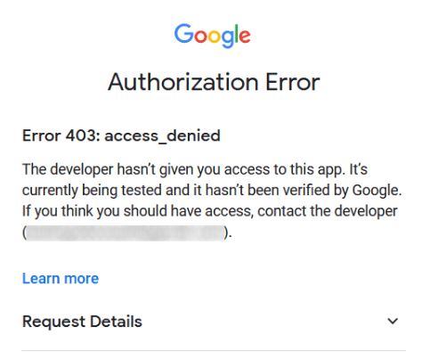

Sincronizar el calendario de Google con Odoo¶
Sincronice el calendario de Google con Odoo para que así pueda ver y gestionar juntas desde ambas plataformas (las actualizaciones se sincronizan en ambas plataformas). Esta integración le ayudará a organizar su calendario, por lo que nunca se perderá una junta de nuevo.
Configuración en Google¶
Seleccione o cree un nuevo proyecto¶
Cree un nuevo proyecto del API de Google y active el API de Google Calendar. Primero vaya a Google API Console e inicie sesión con su cuenta de Google.
Nota
Si esta es la primera vez que visita esta página, Google le pedirá que ingrese a un país y acepte los Términos de servicio. Seleccione un país de la lista y acepte los :guilabel;`Términos de servicio`.
Después, haga clic en Select a project (seleccionar un proyecto) y seleccione (o cree) un proyecto API en el que pueda configurar OAuth y guardar credenciales. Haga clic en New Project (nuevo proyecto).

Truco
Póngale un nombre identificable al proyecto API, como «Odoo Sync», para que lo pueda identificar.
Active el API del calendario de Google¶
Ahora, haga clic en Enabled APIs and Services (API y servicios activados) en el menú del lado izquierdo. Seleccione Enabled APIs and Services (API y servicios activados) otra vez si la barra de búsqueda no aparece.

Después, busque el Google Calendar API en la barra de búsqueda y seleccione Google Calendar API en los resultados de búsqueda. Haga clic en Enable (habilitar).

Pantalla de consentimiento OAuth¶
Ya que creó el proyecto API, el siguiente paso es configurar OAuth. Para hacerlo, haga clic en OAuth consent (consentimiento OAuth) en el menú izquierdo y después seleccione User Type (tipo de usuario).
Advertencia
A las cuentas personales de Gmail solo se les permite ser el tipo de usuario externo. Esto significa que es posible que Google requiera una aprobación o que agregue alcances. Sin embargo, si usa una cuenta de Google WorkSpace podrá usar el tipo de usuario interno.
También tome en cuenta que siempre y cuando la conexión API se encuentre en el modo de prueba externo no necesitará que Google aprueba nada. El límite de usuarios en modo de prueba es 100.
Cuando esté en la página de consentimiento OAuth, escriba Odoo en el campo App name (nombre de la aplicación), seleccione la dirección de correo para el campo User support email (correo de asistencia para el usuario) y escriba la dirección de correo electrónico para la sección Developer contact information (información de contacto del desarrollador). Después haga clic en Save and Continue (guardar y continuar).
Para saltarse el tercer paso, (alcances), haga clic en Save and Continue (guardar y continuar).
Si sigue en el modo de prueba (externo), para agregar las direcciones de correo que configuró en el paso Usuarios de prueba haga clic en Add Users (agregar usuarios) y después en el botón Save and Continue (guardar y continuar). Aparecerá un resumen del registro de la aplicación.
Finalmente, navegue al final de la página y haga clic en Back to Dashboard (volver al tablero).
Ya configuró el consentimiento OAuth y ahora debe crear las credenciales.
Creación de credenciales¶
Necesita tanto el ID del cliente como el secreto del cliente para poder conectar el calendario de Google a Odoo. Este es el último paso que tendrá que realizar en la consola de Google. Para empezar, haga clic en Credentials (credenciales) en el menú de la izquierda. Después, haga clic en Create Credentials (crear credenciales) y seleccione OAuth client ID (ID del cliente OAuth). Se abrirá la guía de Google para crear credenciales.
En (crear un ID de cliente de OAuth), seleccione Website application (aplicación de sitio web) en el campo Application Type (tipo de aplicación) y escriba mi base de datos de Odoo en Name (nombre).
En la sección Authorized JavaScript Origins (orígenes autorizados de JavaScript) haga clic en + Add URI (agregar URL) e ingrese la dirección URL completa del Odoo de su empresa.
En la sección Authorized redirect URIs (URI de redirección autorizadas) haga clic en + Add URI (agregar URI) y escriba a dirección URL del Odoo de su empresa seguido por
/google_account/authentication. Para terminar haga clic en Create (crear).

El ID del cliente y el Secreto del cliente aparecerán ahora, cópielos en un bloc de notas.
Configuración en Odoo¶
Cuando tenga el ID del cliente y el Secreto del cliente, abra su base de datos de Odoo y vaya a .

Ahora, copie y pegue el ID del cliente y el Secreto del cliente desde la página de las credenciales del API del calendario de Google en los campos que aparecerán debajo dela opción Google Calendar. Después haga clic en guardar.
Sincronización del calendario con Odoo¶
Abra la aplicación en Odoo y haga clic en el botón Google para sincronizar su calendario de Google.

Nota
La primera vez que sincronice su Calendario de Google con Odoo se le redirigirá a su cuenta de Google. Ahí seleccione la cuenta de correo que quiere que tenga acceso, después haga clic en continuar (si la aplicación no está verificada) y vuelva a hacer clic en continuar (para permitir la transferencia de información).

Su calendario de Odoo ya está sincronizado con su calendario de Google.
Advertencia
Odoo le recomendamos que primero haga una prueba de la sincronización del calendario de Google en una base de datos de prueba con un correo electrónico de prueba (es decir, uno que solo use para esto) antes de hacer la sincronización en una base de datos en producción.
Ya que haya sincronizado el calendario de Google con el calendario de Odoo:
Si crea un evento en Odoo, se enviará una invitación de Google a todos los asistentes al evento.
Si elimina un evento en Odoo, se enviará un correo de cancelación a todos los asistentes.
Si agrega un contacto el evento, se enviará un correo de invitación a todos los asistentes.
Si quita un contanto del evento, se enviará un correo de cancelación a todos los asistentes al evento.
Puede crear eventos en Google Calendar sin tener que enviar una notificación, solo debe seleccionar No enviar cuando se le pregunte si desea enviar correos de invitación.
Solución de problemas relacionados a la sincronización¶
Es posible que en algunas ocasiones la cuenta de Google Calendar no se sincronice de forma correcta con Odoo. Es posible consultar los problemas de sincronización en los registros de la base de datos.
En estos casos es necesario solucionar los problemas de la cuenta y es posible restablecerla con el botón Restablecer cuenta. Vaya a , seleccione el usuario del que se debe modificar el calendario y haga clic en la pestaña Calendario.

Después, haga clic en el botón Restablecer cuenta del calendario correcto.
Opciones de restablecimiento¶
Las siguientes opciones de restablecimiento están disponibles para solucionar problemas de sincronización de Google Calendar con Odoo:

Eventos existentes del usuario:
Dejarlos intactos: no ocurren cambios en los eventos.
Eliminar de la cuenta actual de Google Calendar: elimina los eventos de Google Calendar.
Eliminar de Odoo: elimina los eventos del calendario de Odoo.
Eliminar de ambos: elimina los eventos de Google Calendar y del calendario de Odoo.
Siguiente sincronización:
Sincronizar solo los eventos nuevos: sincroniza los nuevos eventos en Google Calendar y el calendario de Odoo.
Sincronizar todos los eventos existentes: sincroniza todos los eventos en Google Calendar y el calendario de Odoo.
Haga clic en Confirmar después de hacer la selección para modificar los eventos del usuario y la sincronización del calendario.
Preguntas frecuentes sobre la autenticación OAuth de Google¶
Es posible que en algunas ocasiones la configuración sea errónea y deba solucionar los problemas. A continuación encontrará varios errores comunes que pueden ocurrir al configurar Google Calendar para su uso en Odoo.
Estado de publicación de producción y de prueba¶
Si elige producción como estado de publicación (en lugar de prueba) aparecerá el siguiente mensaje de advertencia:
OAuth está limitado a 100 inicios de sesión de ámbito sensible hasta que se verifique la pantalla de consentimiento de OAuth. Es posible que esto necesite un proceso de verificación que puede tomar varios días.
Vaya a Google API Platform para corregir esta advertencia. Si el estado de publicación es en producción, haga clic en volver a prueba para solucionar el problema.
No hay usuarios de prueba¶
El mensaje Error 403: access_denied aparecerá si no hay usuarios de prueba en la pantalla de consentimiento de OAuth.
Para solucionar este error, regrese a la pantalla de consentimiento de OAuth, vaya a APIs y servicios y agregue usuarios de prueba a la aplicación. Agregue el correo electrónico a configurar en Odoo.
Tipo de aplicación¶
Aparecerá un error de autorización (Error 400:redirect_uri_mismatch) al crear las credenciales (ID de cliente y secreto de cliente de OAuth) si seleccionó aplicación de escritorio como el tipo de aplicación.

Para solucionar este error elimine las credenciales existentes y cree nuevas, seleccione aplicación web como tipo de aplicación.
En URI de redirección autorizados haga clic en AGREGAR URI y escriba: https://subasededatos.odoo.com/google_account/authentication en el campo. Asegúrese de reemplazar subasededatos en la URL con el nombre real de la base de datos de Odoo.
Truco
Asegúrese de que el dominio (el que se usa en URI: https://subasededatos.odoo.com/google_account/authentication) sea idéntico al dominio configurado en el parámetro del sistema web.base.url.
Active el modo de desarrollador para acceder a web.base.url y vaya a .